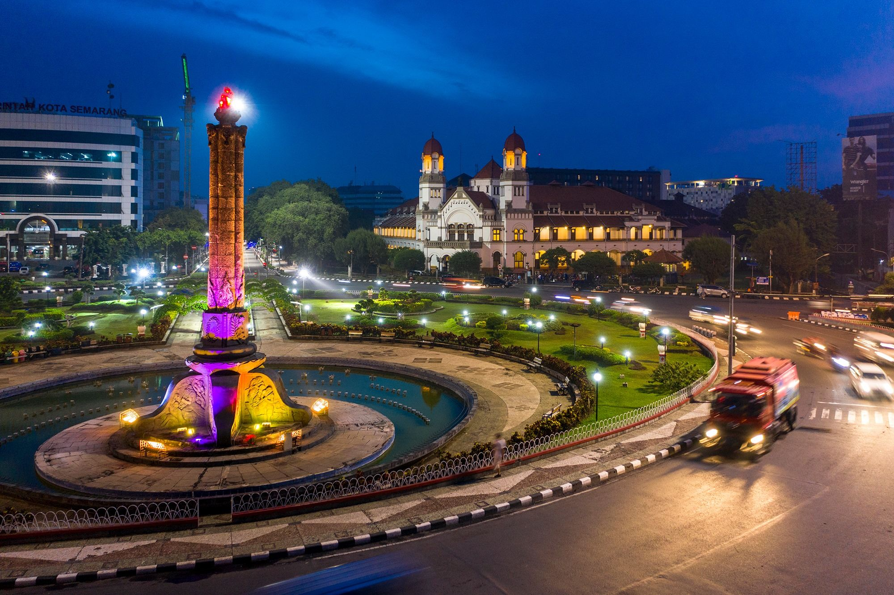
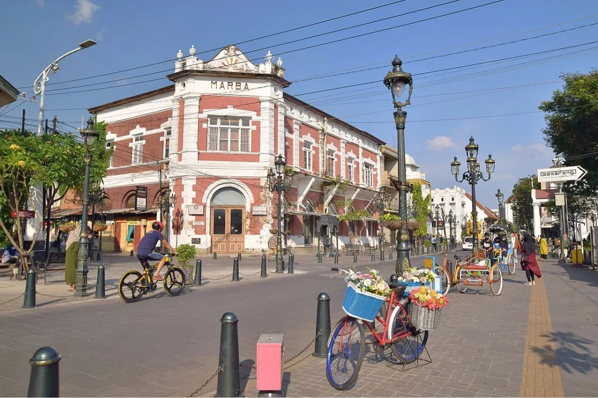
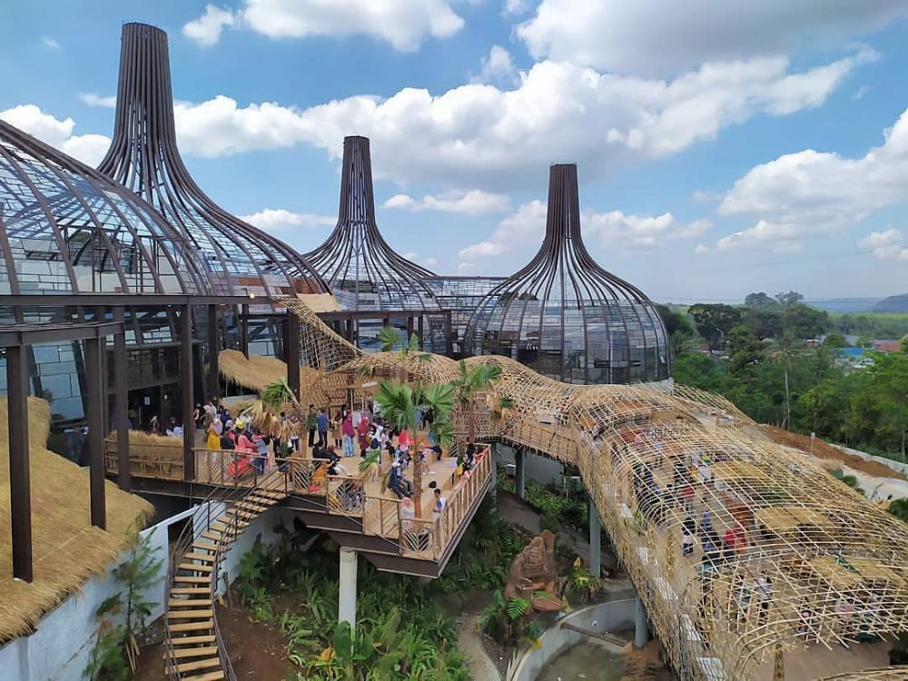
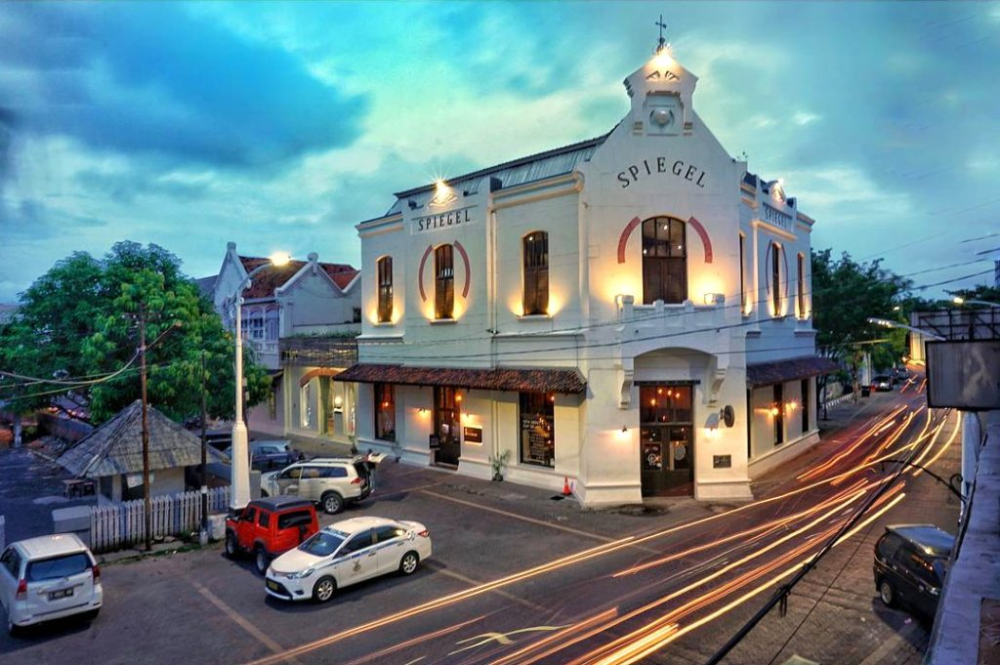
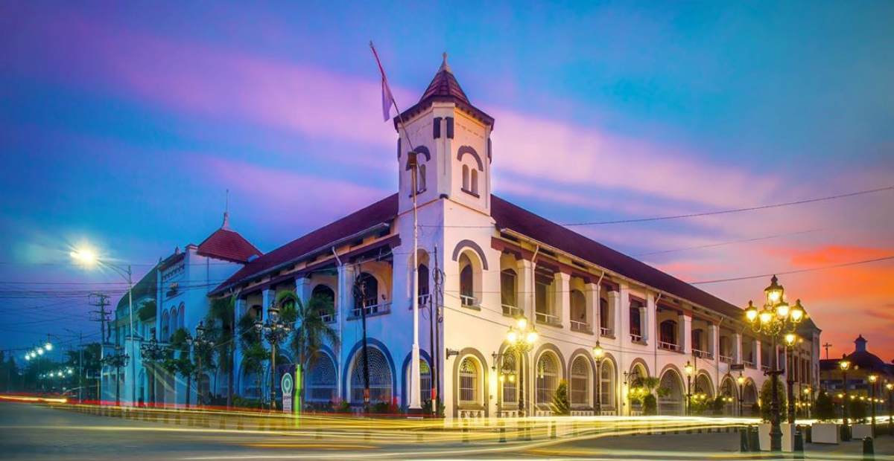

Tentang Kota Semarang

Semarang adalah ibu kota Provinsi Jawa Tengah, Indonesia, serta
salah satu kota metropolitan terbesar di Tanah Air. Dengan luas
wilayah sekitar 373,78 km² dan populasi lebih dari 1,6 juta jiwa,
Semarang menjadi pusat pemerintahan, perdagangan, dan industri di
Jawa Tengah.
Terletak di pesisir utara Pulau Jawa, Semarang memiliki pelabuhan
besar, infrastruktur yang berkembang pesat, serta sektor pariwisata
yang terus bertumbuh. Kota ini juga dikenal dengan sebutan "Venetië
van Java" karena keberadaan kanal-kanal air di beberapa wilayahnya
yang menyerupai kota Venesia di Italia.
Sejarah Kota Semarang

Asal-usul Nama Semarang
Nama "Semarang" berasal dari kata "asem" dan "arang", yang mengacu
pada keberadaan pohon asem yang jarang (arang) ditemukan di daerah
tersebut pada zaman dahulu. Semarang mulai berkembang pesat sejak
masa pemerintahan kolonial Belanda, terutama setelah menjadi pusat
perdagangan dan pelabuhan utama di Pulau Jawa.
Periode Kolonial Belanda
Pada abad ke-17, Semarang menjadi bagian dari wilayah VOC
(Vereenigde Oost-Indische Compagnie) dan berkembang menjadi pusat
administrasi serta perdagangan. Banyak bangunan kolonial yang
dibangun pada masa ini, seperti Lawang Sewu, Kota Lama, dan Gereja
Blenduk. Hingga kini, jejak sejarah tersebut masih dapat ditemukan
di berbagai sudut kota.
Semarang di Era Kemerdekaan
Pada 15 Oktober 1945, terjadi Pertempuran Lima Hari di Semarang,
yang merupakan perlawanan rakyat Semarang terhadap pasukan Jepang
setelah proklamasi kemerdekaan Indonesia. Peristiwa heroik ini
dikenang melalui Tugu Muda, sebuah monumen yang menjadi ikon
perjuangan masyarakat Semarang.
Wisata dan Budaya di Semarang

Semarang memiliki beragam destinasi wisata, baik dari segi sejarah,
budaya, maupun wisata alam.
- Wisata Sejarah dan Arsitektur
-
Lawang Sewu > Bangunan peninggalan Belanda
dengan arsitektur megah dan misteri yang melekat.
-
Kota Lama Semarang > Kawasan bersejarah dengan
bangunan kolonial yang masih terawat.
-
Gereja Blenduk > Gereja tua berarsitektur khas
Eropa yang menjadi ikon Kota Lama.
-
Tugu Muda > Monumen perjuangan rakyat Semarang
dalam Pertempuran Lima Hari.
- Wisata Religi dan Budaya
-
Sam Poo Kong > Kelenteng peninggalan Laksamana
Cheng Ho yang memiliki nilai sejarah dan religi tinggi.
-
Masjid Agung Jawa Tengah > Masjid megah dengan
menara setinggi 99 meter yang menawarkan pemandangan kota dari
atas.
-
Pagoda Avalokitesvara > Pagoda tertinggi di
Indonesia yang terletak di Vihara Buddhagaya Watugong.
- Wisata Kuliner
-
Lumpia Semarang > Kudapan berisi rebung, telur,
dan udang, sering disebut "Lumpia Legendaris".
-
Tahu Gimbal > Tahu goreng yang disajikan dengan
irisan kol, lontong, telur, dan saus kacang kental.
-
Wingko Babat > Kue tradisional berbahan dasar
kelapa dan tepung ketan yang cocok sebagai oleh-oleh.
-
Bandeng Presto > Ikan bandeng dengan duri lunak
yang diolah dengan cara presto dan bumbu khas.
- Wisata Alam
-
Pantai Marina > Pantai dengan pemandangan
matahari terbenam yang menawan.
-
Brown Canyon > Destinasi eksotis dengan
pemandangan tebing yang mirip Grand Canyon di Amerika.
-
Gunung Ungaran > Destinasi pendakian populer
dengan udara sejuk dan panorama alam yang indah.
Perekonomian dan Perkembangan Kota Semarang

Semarang merupakan salah satu kota dengan pertumbuhan ekonomi
tercepat di Indonesia. Beberapa sektor utama yang mendukung ekonomi
kota ini antara lain:
- Industri dan Perdagangan
-
Semarang memiliki kawasan industri besar seperti Kawasan
Industri Wijayakusuma (KIW) dan Kawasan Industri Terboyo, yang
menjadi pusat manufaktur di Jawa Tengah.
-
Pelabuhan Tanjung Emas berperan penting dalam distribusi barang
ekspor dan impor.
- Transportasi dan Infrastruktur
-
Bandara Internasional Jenderal Ahmad Yani melayani penerbangan
domestik dan internasional.
-
Stasiun Tawang dan Stasiun Poncol menjadi pusat transportasi
kereta api antarkota.
-
Tol Trans Jawa menghubungkan Semarang dengan kota-kota besar
seperti Jakarta, Surabaya, dan Yogyakarta.
- Pariwisata dan Ekonomi Kreatif
-
Pertumbuhan sektor pariwisata meningkat dengan adanya hotel,
pusat perbelanjaan, serta event tahunan seperti Semarang Night
Carnival dan Festival Dugderan.
-
UMKM dan industri kreatif semakin berkembang, dengan produk khas
seperti batik Semarang dan kerajinan tangan lokal.
Kesimpulan

Semarang adalah kota yang kaya akan sejarah, budaya, serta
perkembangan modern. Sebagai ibu kota Jawa Tengah, Semarang terus
berkembang menjadi pusat perdagangan, industri, dan pariwisata yang
menarik. Keunikan arsitektur kolonial, kuliner khas, serta destinasi
wisata yang beragam menjadikan Semarang sebagai salah satu kota
paling menarik untuk dikunjungi maupun dijadikan tempat tinggal.